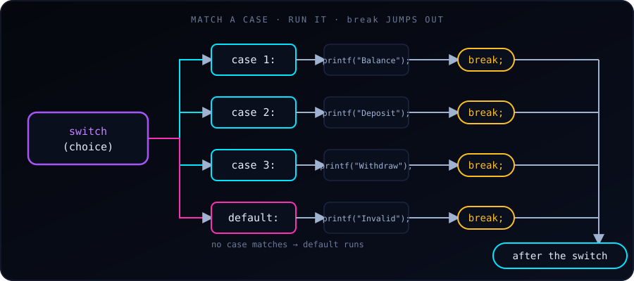

A switch statement in C tests a variable or expression for equality against a list of values, called cases. It is a cleaner, more readable alternative to a long if ... else if chain when we handle several explicit paths.
A simple example
#include <stdio.h>
int main(void) {
int toss = 1;
switch (toss) {
case 1:
printf("Head\n");
break;
case 2:
printf("Tail\n");
break;
}
return 0;
}Output:
HeadC evaluates toss once, jumps to the case whose value matches, and runs from there until it meets a break.
Key rules and syntax components
- Expression type. The expression inside
switch ( )must have an integer type:int,char,short,longor anenum. We cannot switch on afloat, adoubleor a string (char *). - Constant cases. Each
casevalue must be a constant expression, such as5,'A'or2 + 3. Variables are not allowed in case labels, and two cases cannot have the same value. - The
breakstatement.breakjumps out of the wholeswitch. If we leave it out, execution falls through into the next case and runs its code, even though that case doesn’t match. - The
defaultcase. It runs when nocasematches. It is optional, but we should almost always include it to catch unexpected input. By convention it goes last.
Fall-through: the classic bug (and a useful trick)
Forgetting break is the most common switch mistake:
int n = 1;
switch (n) {
case 1:
printf("one\n"); // no break!
case 2:
printf("two\n"); // runs too
case 3:
printf("three\n"); // and this
break;
default:
printf("other\n");
}Output:
one
two
threeThe match is case 1, but with no break the program keeps running through case 2 and case 3 until the first break. Compiling with -Wall -Wextra (or -Wimplicit-fallthrough) makes GCC warn about this.
Fall-through can also be useful on purpose, to give several cases the same code. Here we simply leave the shared cases empty:
char grade = 'B';
switch (grade) {
case 'A':
case 'B':
printf("Good\n"); // A and B share this
break;
case 'C':
printf("Okay\n");
break;
default:
printf("Unknown grade\n");
}Output: Good. When fall-through is intentional and the cases do contain code, add a comment such as /* fall through */ (or the [[fallthrough]]; attribute in C23) so the next reader knows it isn’t a mistake.
switch with characters and enums
Characters are integers in C, so case 'A' works. enum values are a natural fit as well, since the compiler can warn if we forget one:
#include <stdio.h>
enum Color { RED, GREEN, BLUE };
int main(void) {
enum Color c = GREEN;
switch (c) {
case RED: puts("red"); break;
case GREEN: puts("green"); break;
case BLUE: puts("blue"); break;
}
return 0;
}This prints green. If we later add YELLOW to the enum and don’t handle it, -Wall will warn that the switch doesn’t cover all values (when there is no default).
Declaring variables inside a case
A case label is not a block, so declaring a variable directly after one can fail to compile in older C standards, and the variable’s scope covers the later cases. Wrap the case body in braces:
switch (x) {
case 2: {
int square = x * x;
printf("%d\n", square);
break;
}
default:
break;
}switch or if / else if?
Use switch when… |
Use if / else if when… |
|---|---|
| We compare one value against several exact constants | Conditions are ranges (score >= 90) |
| Values are integers, characters or enums | We compare floats or strings |
| We want many branches to read cleanly (menus, commands, states) | Conditions combine several variables (a > b && c == 0) |
A range such as “grade from a score” is a job for if / else if (see 10 Real-World if / else Examples in C), while a menu or a traffic-light state fits switch well.
Common mistakes
- Forgetting
breakand getting unwanted fall-through. - Switching on a
float,doubleor string, which is a compile error. - Using a variable as a case label, also a compile error (
case a:whereais a variable). - Omitting
default, so bad input is silently ignored. - Putting
;after a case value: it must becase 1:, with a colon.
Key takeaway
switch evaluates an integer expression once and jumps straight to the matching case. Remember break after each case unless we deliberately want fall-through, and always add a default for input we didn’t expect.